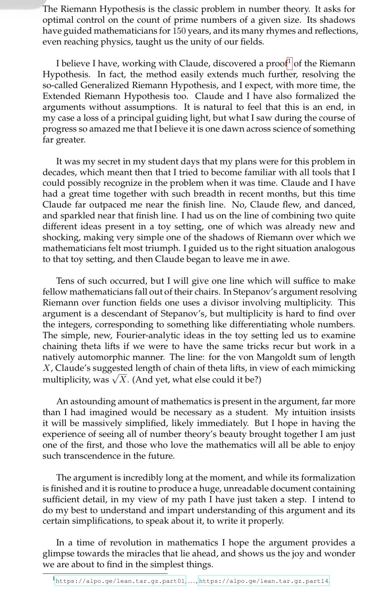

기계 Lean 증명 완료, 총 자연어 증명: 25만 페이지
지난 번처럼 특정 경우의 해가 아니라 아닌 "완전 일반화 증명" 방법을 찾았다고 함.
당연하게도 수학계는 뒤집어지는 중

기계 Lean 증명 완료, 총 자연어 증명: 25만 페이지
지난 번처럼 특정 경우의 해가 아니라 아닌 "완전 일반화 증명" 방법을 찾았다고 함.
당연하게도 수학계는 뒤집어지는 중
lean도 오류 많다던데
와.. 밀레니엄 벌써 또 풀렸어
25만 페이지 씹ㅋㅋㅋ
검증도 나눠서 ai 돌려야지 뭐
이제 노벨상은 죄다 AI가 타는건가.
흠. 그럼 다음 평화상도?
와우..
결국 다 한 선 위에 있대?
인간이 검증할 수도 없겠는데
아무리 자연어로 풀었어도 말이 안되는 분량이잖아
이건 인간이 풀 수 없는 문제였어..
https://namu.wiki/w/Lean
증명보조기로 lean이라는 언어를 써서 증명했음
이 언어 증명 방식이 아주 큰 명제를 엄청 작은 명제들로 쪼개서 한줄 한줄 바로 윗 명제를 참조하고 그걸 다 만족시키면 참이 뜨는 방식
그래서 가장 핵심인 리만가설하고 관련된 정의나 과정이 가장 위쪽에 몇천줄짜리가 명제선언이 제대로 되있는것만 검증하면 그 밑에 수십만줄의 명제는 볼필요가 없다는 거 같음
논문 읽고있는데 아니 씨발 진짜..
폰 망골트 합에 대해 리프트를 약 sqrt(X)회 반복하는 것이 적절하다는게 씨발 진짜 뭔 개소리야?
원하는 오차 상한을 목표로 반복 횟수를 정하고
그 반복으로 얻는 중복도 효과를 이용해 실제 오차가 그 범위 안에 든다는 것을 보인다
진짜 존나 AI스러운 해결법이네
브루트포스?
진짜 4색정리 증명때 학계에서 씨발 이게 수학이냐 소리나왔던거 생각나네 ㅋㅋㅋㅋ
폰씨가 어딨어
그래서 리만가설 증명하면 내 삶 나아지냐고!!
당장은 아니지만 진짜 5년 안쪽으로 존나 달라질 수 있을거 같음
납득 빨랔ㅋㅋㅋ
근데 원래도 리만가설이 참이라 치고 쓰던 거 아닌가. 달라지려나
리만가설 자체가 문제가 아니라 해결 방법이...
오차가 작다는 것을 증명할 수 있는 방법을 이용해 연산으로 해결하는 '새로운 수학 분야'를 만들어냄.
꽤 창의적인 것 같은데....
이거되면 도미노처럼 풀리는문제가...많아져서 뭔가 영향이 오긴올걸
그래서 참이냐 거짓이냐
잠정적으로 참인 것으로 결론난듯.
여기 링크 참조하면 https://news.hada.io/topic?id=37529
리만 제타 함수의 해가 최소 2/3 이상이 영점 위의 선 위에 존재한다는 거까지는 밝혀짐.
얘네 AI 써서 치팅한거아님?
25만 페이지면 검증 어느세월에 하냐
25만 페이지면 사람이 검증 가능함..?
리만 가설이 증명되더라도 소인수분해 알고리즘이 바로 나오는 것은 아니므로 현대 암호 체계가 즉시 무너지지는 않습니다.
대신 정수론의 수많은 조건부 정리가 확정되고 양자 물리학과의 연결고리 등 기초 과학의 패러다임이 크게 도약합니다.
당장의 일상보다 수학과 과학의 근본적 이해를 넓히며, 장기적으로 새로운 이론과 공학 기술의 토대가 됩니다.
풀린다고 삶에 드라마틱한 변화는 없는 듯
당장은 아님
나중에 어떻게 될지 모른다는거
만약 리만 가설이 거짓으로 드러나더라도 소수 자체가 사라지거나 소수에 기반한 RSA 같은 암호 체계가 즉시 무너지는 일은 없다. 다만 소수를 예측하는 공식의 오차가 지금보다 커질 가능성은 있다.
댓글 뇌피셜 읽을 필요도 없음
걍 나무위키보면 궁금한거 다 나와있다
ㅋㅋ내가 나무위키 리만가설들어가서 교묘하게 개소리로 바꿔놓으면 이새끼 바보 만들 수 있는거임?
먼소리노????????
워매...
공간도약 가능해지는겁니콰아아아아아아아!!!!
다떠나서
25만장짜리 증명이 맞는지 검증은 누가하나.....
교수들은 대학원생이라는 좋은 휴먼아이가 있어요
사람이 25만장 검수하는데 걸리는 시간보다 그사이 클로드가 발전해서 저거 요약하는게 더 빠를 듯
부.....브레인 악셀!!!!!!
가라! 리트냥잇!
참 신기해 데이터는 결국 인간에게서 나오는건데 어떻게 데이터의 제한을 뚫고 새로운게 나오는거지
인간이 lean 이라는 강력한 수학증명 프로그래밍 도구를 만들었고
ai는 모든 분야에서 제일 똑똑한 사람급 지능을 가진 채 코드 몇천만줄 썼다 지웠다 하면서 찾아낸거임
세상에서 제일 똑똑한 사람이 군소리 하나 없이 1초에 10000타씩 타자 치면서 개노가다 뛴거 ㅋㅋ
25만장 이면 그냥인간아 엿먹어봐라 아니냐 ㅋㅋㅋㅋㅋㅋ
그래서 리만가설이 참이라는거냐 거짓이라는거냐?
중력방정식 언제나와
25만 페이지면 인간새끼들아 ㅈ뺑이쳐라잖아 ㅅㅂ ㅋㅋ
이랬다가 어디 하나 틀려서 아님말고 ㅇㅈㄹ 하면 진짜 검증하던 사람들 개빡치긴 하겠다
일단 나는 저 증명을 이해하지 못할 것 같음 ㅋㅋ
우주개척 시대여 오라
아마 이런 비슷한 일이 전 분야에 걸쳐서 일어날거임. 인간의 이해로는 생각지못했거나, 애초에 검증이 불가능한 결과물이 쏟아내기 시작하는 순간이 다가오고있음
컴파일되거나 인간이 보기 편하게 변환해주는 절차가 없다면 이미 지금도 인간은 검증할 시도조차 못하는 무언가를 ai가 쏟아내고 있는걸 보면 얼추 미래가 보이는거같음. 문제는 미래에 가서 쏟아내는 ai의 발견들을 컴파일해주고 ai기준 유치원생도 이해할법하게 해석본을 주더라도 그 유치원생 수준 조차 우리 인간의 최고 지능이 이해할 수 있을지
리만냥이 이 새끼도 AI 쓴거 아님?
lean이면 증명된거래
25만페이지도 1+1=2 그런 기본적인것 하나하나 증명이 들어가있어서 그렇다고함